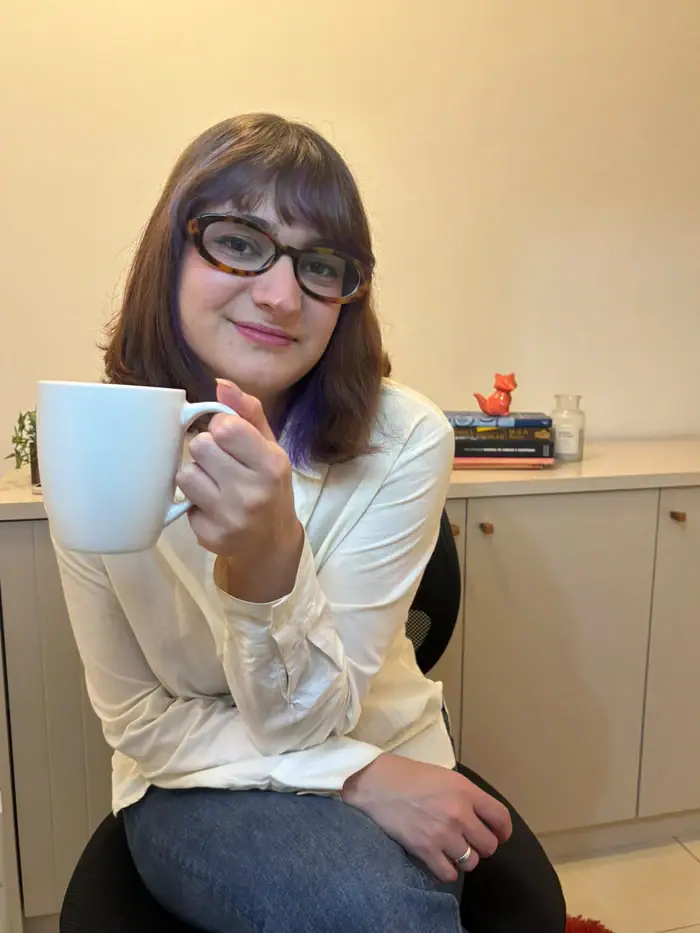

Paleta de cores
Medida no navegador: fundos ponderados pela área ocupada, textos pela quantidade de caracteres. Destaques reúnem cores saturadas e fundos de botão.
Fundos
#FDF8F2
Fundo · 47.5%
rgb(253, 248, 242)
rgb(253, 248, 242)
#F2E2D5
Fundo · 19.7%
rgb(242, 226, 213)
rgb(242, 226, 213)
#311507
Fundo · 17.9%
rgb(49, 21, 7)
rgb(49, 21, 7)
#F8F0E7
Fundo · 14.9%
rgb(248, 240, 231)
rgb(248, 240, 231)
#A0785E
Fundo · 0.0%
rgb(160, 120, 94)
rgb(160, 120, 94)
Textos
#5E5C5A
Texto · 52.4%
rgb(94, 92, 90)
rgb(94, 92, 90)
#E3D2C3
Texto · 12.3%
rgb(227, 210, 195)
rgb(227, 210, 195)
#120C0A
Texto · 6.1%
rgb(18, 12, 10)
rgb(18, 12, 10)
#7A3C20
Texto · 5.3%
rgb(122, 60, 32)
rgb(122, 60, 32)
#EBDCCD
Texto · 4.7%
rgb(235, 220, 205)
rgb(235, 220, 205)
#3F3D3A
Texto · 4.1%
rgb(63, 61, 58)
rgb(63, 61, 58)
Destaques
#E3D2C3
Destaque
rgb(227, 210, 195)
rgb(227, 210, 195)
#7A3C20
Destaque
rgb(122, 60, 32)
rgb(122, 60, 32)
#EBDCCD
Destaque
rgb(235, 220, 205)
rgb(235, 220, 205)
#62230B
Destaque
rgb(98, 35, 11)
rgb(98, 35, 11)
Gradientes
linear-gradient(135deg, oklab(0.234 0.036 0.037) 0%, oklab(0.313 0.043 0.043) 100%)linear-gradient(90deg, oklab(0.434 0.066 0.065) 0%, oklab(0.308 0.046 0.045) 100%)linear-gradient(90deg, oklab(0.434 0.066 0.065) 0%, oklab(0.504 0.062 0.066) 55%, oklab(0.608 0.059 0.065) 100%)linear-gradient(90deg, rgb(98, 35, 11) 0%, rgb(122, 62, 34) 50%, rgb(98, 35, 11) 100%)radial-gradient(circle, rgba(217, 167, 127, 0.24) 0%, rgba(217, 167, 127, 0.08) 45%, rgba(49, 21, 7, 0) 70%)Tipografia
Raleway · Aa Bb Cc 0123
91% do texto · Se a sua cabeça não desliga, esta página é para você.Instrument Serif · Aa Bb Cc 0123
5% do texto · Se a sua cabeça não desliga, esta página é para você.Playfair Display · Aa Bb Cc 0123
3% do texto · Se a sua cabeça não desliga, esta página é para você.Escala usada (desktop 1440px)
| Tamanho | Peso | Família | Amostra |
|---|---|---|---|
| 53px | 400 | Instrument Serif | Texto de exemplo |
| 46px | 400 | Instrument Serif | Texto de exemplo |
| 44px | 400 | Instrument Serif | Texto de exemplo |
| 42px | 400 | Instrument Serif | Texto de exemplo |
| 38px | 400 | Instrument Serif | Texto de exemplo |
| 38px | 600 | Playfair Display | Texto de exemplo |
| 35px | 400 | Instrument Serif | Texto de exemplo |
| 23px | 600 | Playfair Display | Texto de exemplo |
| 20px | 400 | Instrument Serif | Texto de exemplo |
| 17px | 500 | Raleway | Texto de exemplo |
Mobile (390px): 37px/400, 36px/400, 35px/400, 24px/400, 22px/600, 16px/700, 16px/500, 15px/700 · H1 no mobile: 32px
Tags
| Tag | Família | Tamanho | Peso | Altura de linha | Espaçamento | Caixa | Cor |
|---|---|---|---|---|---|---|---|
| <h1> | Raleway | 32px | 400 | normal | normal | none | #5E5C5A |
| <h2> | Instrument Serif | 42px | 400 | 44px | normal | none | #FDF8F2 |
| <h3> | Raleway | 13px | 700 | 20px | normal | none | #FDF8F2 |
| <p> | Raleway | 16px | 500 | 24px | normal | none | #5E5C5A |
Botões
Recriados com os estilos computados reais. Efeitos de hover e animação não aparecem aqui; veja a seção de animações.
Agendar Primeira Conversa Agora
fundo #62230B11 · texto #5E5C5A · raio 999px · padding 0px 8px · 16px/400 none · 6x na páginaEntrar em contato
fundo #62230B11 · texto #5E5C5A · raio 999px · padding 0px 13px · 16px/400 none · 1x na páginaAgendar pelo WhatsApp
fundo #FDF8F219 · texto #E3D2C3 · raio 999px · padding 0px 8px · 16px/400 none · 1x na páginaFalar com Nicole pelo WhatsApp
fundo #FDF8F219 · texto #EBDCCD · raio 999px · padding 0px 8px · 16px/400 none · 1x na páginaCards e containers
Card (4x)
01. Escuta profissional Um espaço reservado para falar sobre questões importantes com acol
raio 10px · sombra none · borda 1.81818px solid rgb(217, 197, 181) · 341x245pxCard (1x)
Dar o primeiro passo também faz parte do processo Buscar acompanhamento psicológico pode s
raio 16px · sombra none · borda 0px none rgb(235, 220, 205) · 517x495pxBordas, raios e sombras
999px
8px
10px
16px
Sombras
rgba(90, 40, 15, 0.22) 0px 3px 8px 0pxrgba(217, 167, 127, 0.28) 0px 0px 30px 0pxrgba(49, 21, 7, 0.12) 0px 6px 16px 0pxEspaçamentos
- Largura do conteúdo mais comum: -px
- Padding vertical das seções (topo/base): 0px/0px (7x), 72px/53px (1x)
- Gaps mais usados (flex/grid): 10px, 16px, 14px, 4px, normal 16px, normal 12px
- Altura total da página: 6581px em 8 seções
Estrutura e ritmo de cores das seções
Cada faixa é uma seção de topo, com altura proporcional e a cor ou imagem de fundo real.
1. hero Psicoterapia online com escuta profissional e acolhimento 673px · padding 0px/0px
2. Alguns momentos da vida pedem um olhar mais cuidadoso 880px · padding 0px/0px
3. Psicoterapia online: praticidade e privacidade no seu atendi 1165px · padding 0px/0px
4. como-funciona Um processo em que você é o foco 785px · padding 0px/0px
5. Conheça Nicole Cooper 865px · padding 0px/0px
6. Seu atendimento psicológico acontece de onde você estiver 675px · padding 0px/0px
7. faq Dúvidas frequentes 766px · padding 72px/53px
8. como-funciona Dar o primeiro passo também faz parte do processo 682px · padding 0px/0px
Animações, ícones e bibliotecas
- Keyframes próprios: abrindo, boia, brilha-ponto, brilho, faixa, flutua, flutua-entra, fundo-vivo, gira, pre-fundo, pre-gira, pulso, respira, sacode
- Animações de entrada do Elementor: nenhuma
- Classes de scroll reveal da casa: nenhuma
- Ícones: 27 SVG, 0 ícones de fonte
- Bibliotecas e tags detectadas: ga4, google-ads, gtm
Snippets da biblioteca presentes nesta página
- Nenhum snippet da biblioteca identificado.
Imagens do site
